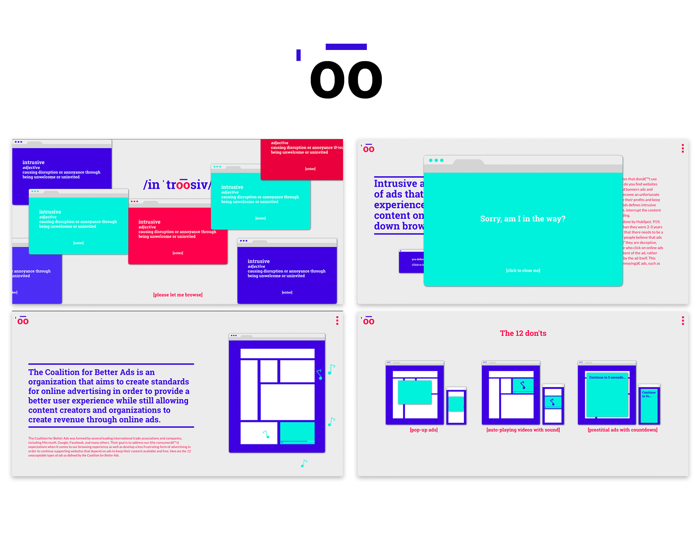

2017, digital (HTML, CS, JS / Atom, GitHub)
https://laura-hdz.github.io/intrusiveadvertising/
Browsing the internet has become an almost unbearable experience without an adblock extension or browser. Reading articles or visiting small blogs (or even going through your facebook feed) can become so frustrating because of intrusive advertising that instead of incentivizing users to continue browsing or look further into the subject of the ad, it makes them leave and turn to different websites that will provide a better user experience. Intrusive advertising isn’t only annoying for the user, it can sometimes completely render websites unreachable or unusable, particularly on mobile when an ad redirects to a different page or covers the whole screen with an impossible-to-close ad.
For this Concordia University class project, I wanted to design and code a website that would explain what intrusive advertising is, the different types of intrusive advertising, why people use adblock, the effects of adblock, and the effectiveness of non-intrusive advertising. The illustrations were animated through CSS.